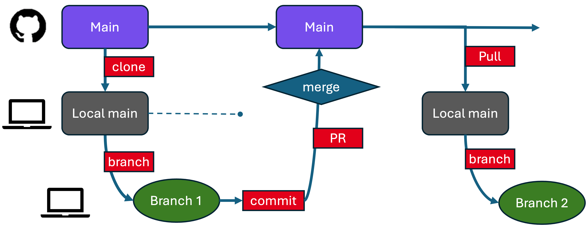

Solo Git Workflow for Your Project
📝 This file is part of the
template-projectstarter documentation. Once you’ve adapted the template for your own project, you can rename or delete this file.
This guide explains how to work on your own project using Git. You’ll learn how to:
Create branches to safely edit your code.
Sync your project across devices.
Avoid merge conflicts and lost work.
This assumes you’re working alone or in a small team and that this is your own project repository (not a fork).

A typical GitHub branch and pull request workflow (for solo working). You work in a branch of your main; the important copy of the code (and its history) is in the main branch. The local main are just a means of transferring information (or running the latest clean version of the code).
1. Keep main Clean
The main branch should reflect your most stable version — the code you would want someone else to run.
Start each new task or fix by creating a new branch off of main. This protects your main branch from accidental errors while you work.
Terminal
git checkout main # Switch to the main branch
git pull # Get the latest updates from GitHub
git checkout -b feature-name # Create and switch to a new branch
VSCode
Open the Source Control panel.
Click the current branch name in the bottom-left.
Select
main, then click+ Create new branch, and name it.
GitHub Desktop
Switch to
mainusing the branch menu at the top.Click
Fetch origin.Then
Branch > New branchand enter a name.
Use a branch name that reflects what you’re doing: add-plotting-utils, docs-update, fix-bug-logging, or just use a simple increment like eleanor-patch-1 and eleanor-patch-2.
2. Work on a Branch
Make your changes on the new branch — whether editing code, fixing bugs, or writing documentation. First, save your files. Then commit your changes using one of the following methods:
Terminal
git add . # Stage all modified files
git commit -m "feat: add new plotting utils" # Save your staged changes with a message
VSCode
Remember to save your files.
Go to Source Control, type a message, and click ✔ Commit.
GitHub Desktop
First save your files.
Write a commit message in the bottom left.
Click
Commit to <branch>.
Don’t worry, if you forgot to save some files, you can just save them and do a new commit.
3. Option A: Merge the Branch (Fast-forward style)
This option merges your feature branch directly into main on your local machine, then pushes it to GitHub.
Terminal
git checkout main # Switch to main
git pull # Make sure it’s up-to-date
git merge feature-name # Merge your branch
git push # Push merged changes to GitHub
VSCode
Switch to
mainvia the bottom-left branch menu.Open the Source Control panel and select
... > Merge branch....Choose your feature branch.
Then run
git pushfrom the Terminal, or clickSync Changesin the Git panel.
GitHub Desktop
Switch to
main.Branch > Merge into current branchand select your feature branch.Then click
Push origin.
3. Option B: Open a Pull Request (recommended, even solo!)
Instead of merging directly, you can open a pull request to merge your branch into main. This helps preview changes and is useful if you have CI (“continuous integration”) tests. If you’re using this template, we have CI test, where the “Action” to run is specified in .github/workflows/tests.yml (see actions_overview.md) and the tests to be run are in the tests/ folder. Using a pull request will ensure tests are run (which can find any problems with the edited code) before the merge onto the main branch.
Terminal to push the branch
git push -u origin feature-name # Push the branch to GitHub and set the upstream
In a solo project, this usually works automatically. You only need to set the upstream (-u) if this is your first push for that branch.
VSCode
Save your changes and commit.
Click
Publish BranchorSync Changesin the “Source Control” tab.If prompted to select a remote, choose
origin(your GitHub-hosted repo). Note, if you’re collaborating with an external repository, you may instead be choosingupstream(see Git Collaboration).
GitHub.com
After pushing, visit your repository on GitHub, e.g.
http://github.com/YOUR_USERNAME/template-project.Click “Compare & pull request” when prompted.
Add a short message describing your changes.
Click “Create pull request”.
Once the pull request has passed all tests, click “Merge”. If it fails some tests, or you notice additional changes you’d like to make, you can make a new commit and sync to github.com which will append these changes into the open pull request (if done from the same branch).
4. Rinse and Repeat
Create a new branch for each new feature or fix.
Merge into
main(via merge or pull request).Push your work regularly.
This helps isolate changes, improve version control, and reduce the chance of conflicts.
(Optional) Sync Across Devices
If you work on multiple computers, you can also push and pull your work to stay in sync.
On device A:
Terminal
git push origin main
VSCode
Use
Sync Changesin Source Control or push via Terminal.
GitHub Desktop
Click
Push origin.
On device B:
Terminal
git pull origin main
VSCode
Click
... > Pullor use Terminal.
GitHub Desktop
Click
Fetch origin, thenPull.
To sync a feature branch:
On device A:
git push origin feature-name
On device B:
git checkout feature-name # Switch to the feature branch
git pull origin feature-name # Pull latest updates from GitHub
Or use VSCode or GitHub Desktop’s branch menu to check out the branch and pull changes.
Tips
Use
git statusto see what files you’ve changed.Use
git log --onelineto view recent commits quickly.If you need to undo something, don’t panic — ask Git for help or see GitHub Docs.
Cheatsheet: Handy Git Commands
git status # Show the current state of your working directory
git branch # List all local branches
git branch -d name # Delete a branch (only if already merged)
git branch -D name # Force delete a branch (even if not merged)
git log --oneline # Compact history of recent commits
git diff # Show what's changed but not staged
git diff --staged # Show what's staged for commit
git restore filename # Discard changes to a file (careful!)